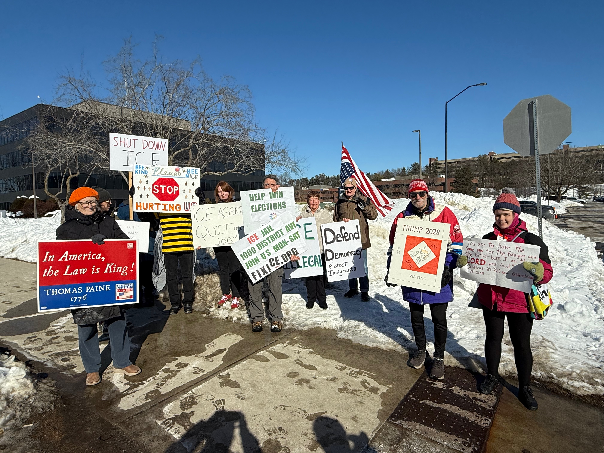

About FixICE.org
FixICE.org is a Burlington, MA-based grassroots organization. Our mission is to empower people to take effective action to stop ICE cruelties, support immigrants, and win elections that create lasting change.
FixICE Events
FixICE.org is a member of the coalition of groups that protest at the ICE detention center on 1000 District Ave, Burlington, MA. Protests are on Monday–Saturday. Click here for schedule, location, and sponsoring organization.
Wednesday ☕ Coffee Connection - Caffeinate, connect, and contribute. Enjoy coffee and community at the protest site, with a featured fundraiser and information on actions to take. Details & donate.
We Make It Easier to Get Involved
Getting involved can feel overwhelming - we make it easier. Our website curates the best organizations and resources so you can quickly find meaningful ways to act. Browse by resource or filter actions by cause, action type, frequency and mode.
We highlight established local groups that:
- Meet regularly
- Make participation accessible
- Provide clear information
- Have a track record of effective action